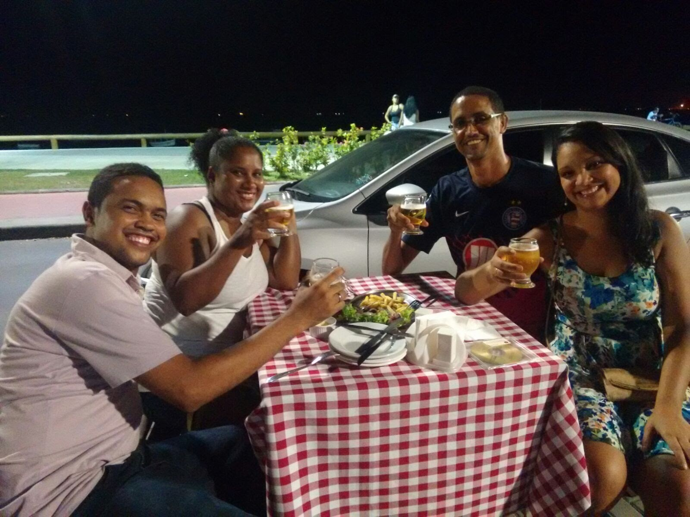
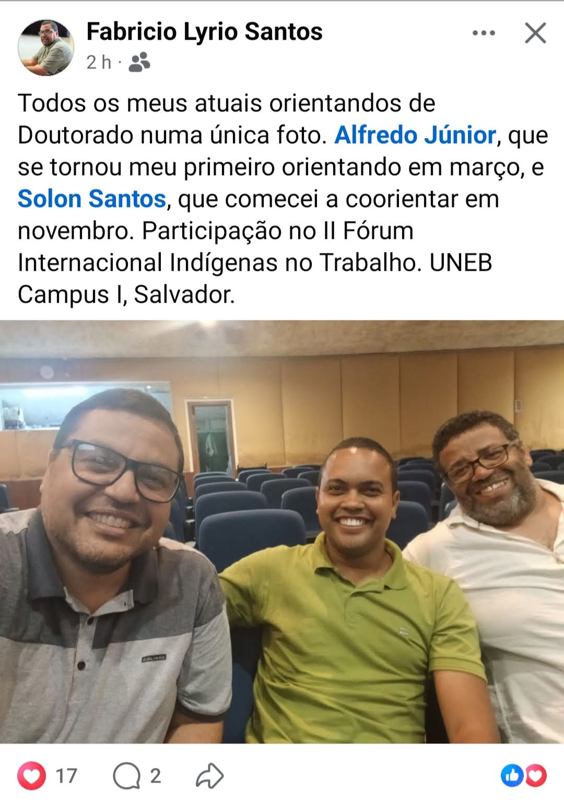
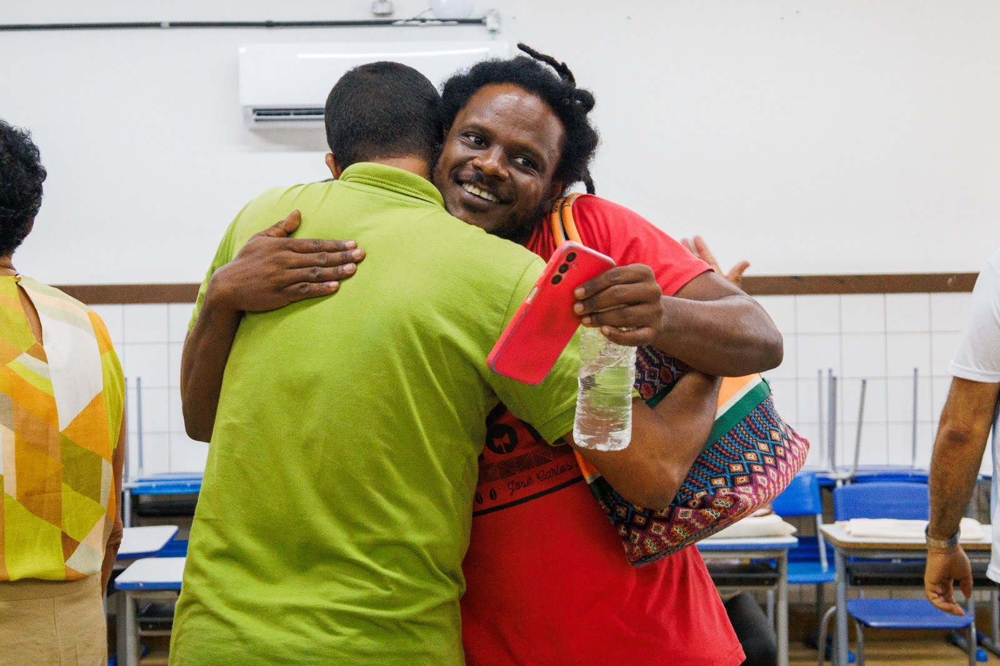
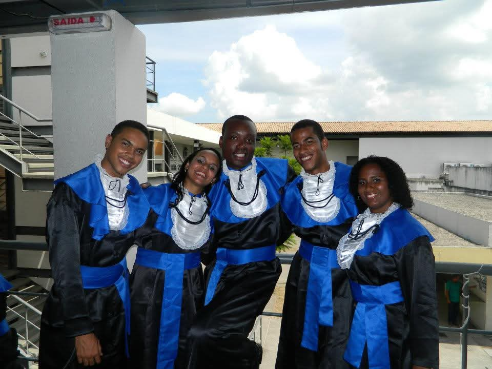
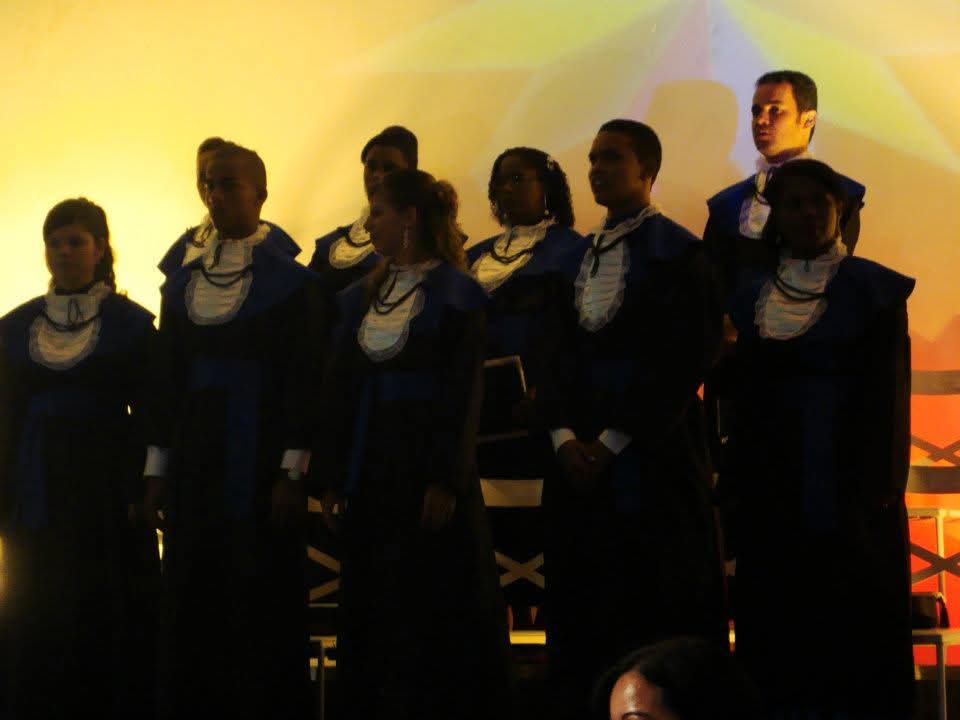
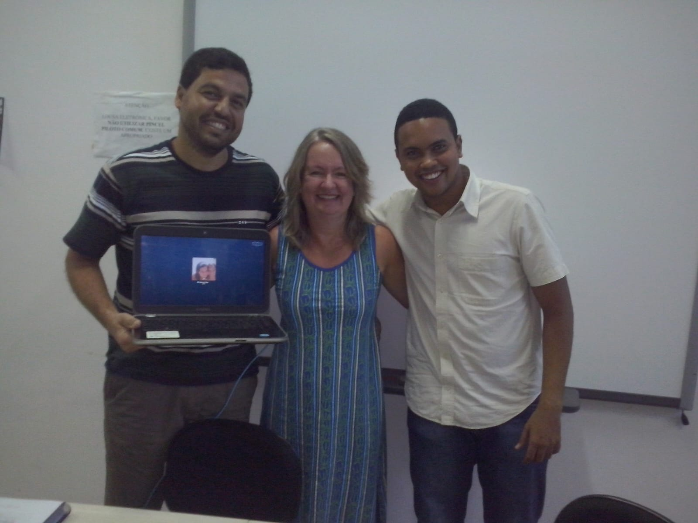
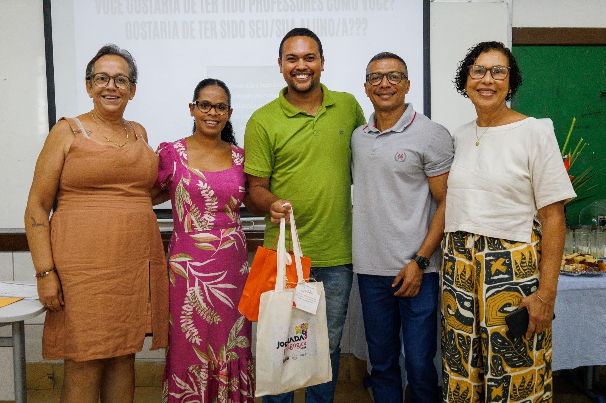
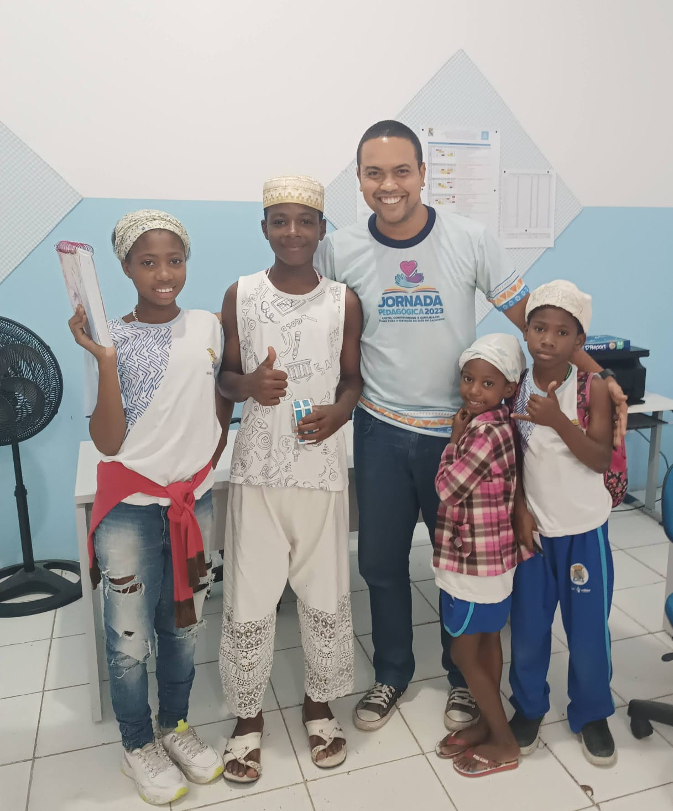

2013 · Salvador
Qualificação do mestrado
Na UFBA, celebrando a qualificação do mestrado com colegas e amigos formados na UFRB.
Trajetória de egresso
Professor da Rede Estadual de Educação da Bahia e doutorando em História
Professor da rede estadual e doutorando no PPGH/UFBA
Ingressou na Licenciatura em História da UFRB em 2008.1 e concluiu o curso em 2011.2, com colação de grau em 12 de maio de 2012. Atualmente atua como professor efetivo da Secretaria da Educação do Estado da Bahia e cursa doutorado em História na Universidade Federal da Bahia.
“A UFRB transformou a minha vida e a de minha família, abrindo caminhos que talvez não fossem possíveis sem a oportunidade de estudar em uma instituição pública, gratuita e de qualidade.”
Depois da graduação
Após a graduação, Alfredo realizou o mestrado na UFBA e atualmente desenvolve o doutorado sob orientação do professor Fabrício Lyrio Santos, que também foi seu professor na UFRB. Sua relação com o curso permanece viva por meio da participação no PIBID como professor supervisor, em bancas de TCC, eventos acadêmicos, atividades culturais e outras experiências formativas.
Linha do tempo

Na UFBA, celebrando a qualificação do mestrado com colegas e amigos formados na UFRB.

Participação no II Fórum Internacional “Indígenas no Trabalho”, na UNEB, Campus I, ao lado de Fabrício Lyrio e Solon Santos.

Oficina sobre o Plano Municipal de Educação Antirracista de Cachoeira e reencontro com o colega de graduação Fred Igor.
Memórias do curso



Atuação docente


Depoimento
“Sou Alfredo Pinto da Silva Júnior, atualmente professor da Rede Estadual de Educação da Bahia e doutorando no Programa de Pós-Graduação em História da Universidade Federal da Bahia. Ingressei, em 2008.1, no curso de Licenciatura em História da UFRB, onde estudei no CAHL, em Cachoeira, até o semestre 2011.2.”
“Sinto um imenso orgulho por fazer parte da história da UFRB, uma universidade que pulsa no coração do Recôncavo da Bahia e que tem transformado vidas por meio do ensino público, gratuito e de qualidade, da pesquisa, da extensão e do compromisso com o desenvolvimento social, cultural e intelectual da região.”
“Celebrar os 20 anos do curso de História da UFRB é celebrar uma trajetória de excelência acadêmica, compromisso social e formação de professores e pesquisadores. Vida longa ao curso de História e à Universidade Federal do Recôncavo da Bahia!”